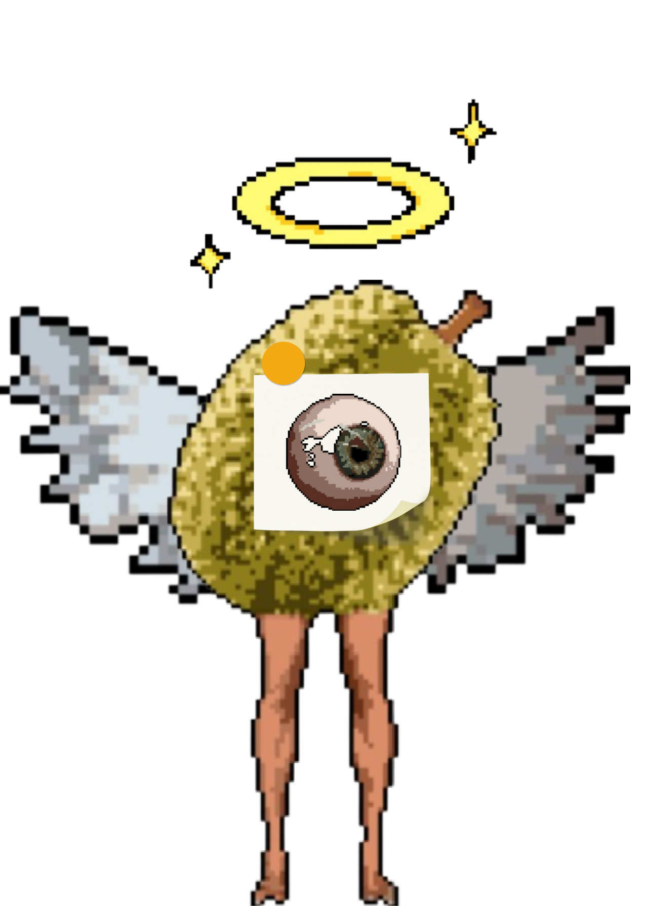
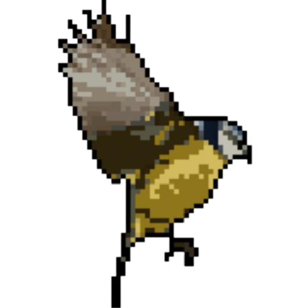
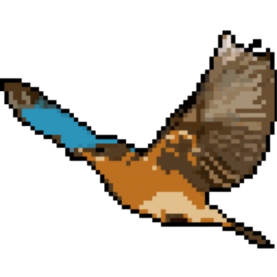
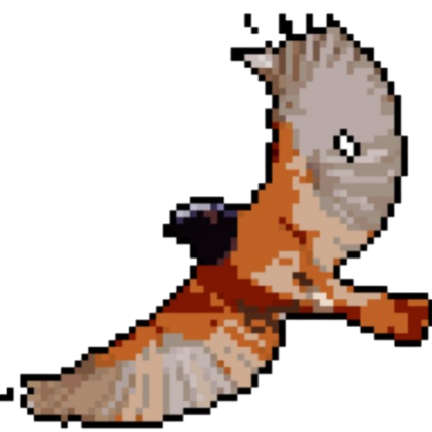
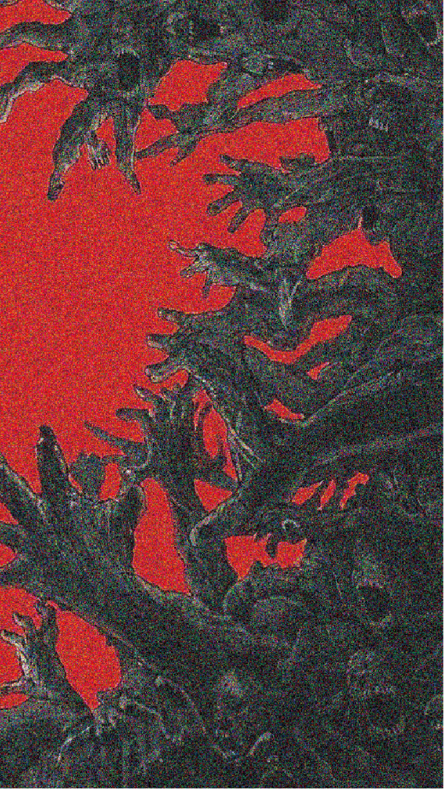
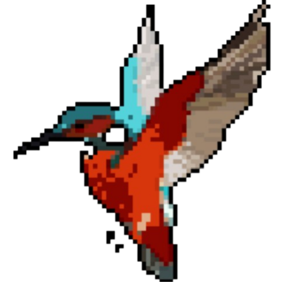
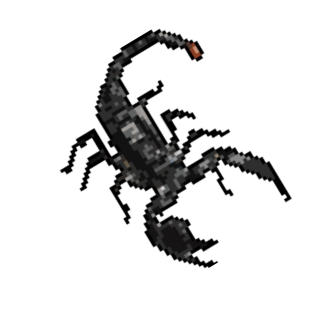
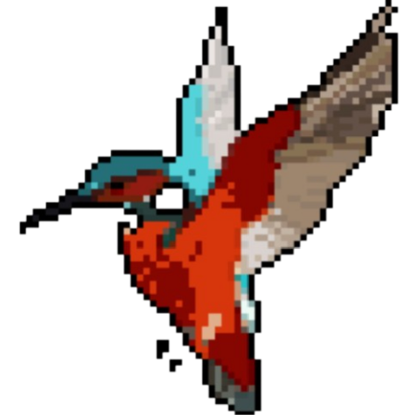
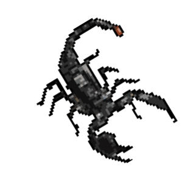

On the fifth and sixth days of God's creation, the Garden of Eden was not quiet, but an undercurrent. All this seemed to foreshadow the terrible disaster to come.

Descendants of Adam and Eve. They are in an earthly paradise, indulging in sensual pleasures. They were playing, dancing, swimming, riding horses and strange animals, and eating sweet fruit.




Evil will be judged, the bird-man doctor will be punished in place of God, and the revelers will suffer terrible punishment in hell


 


